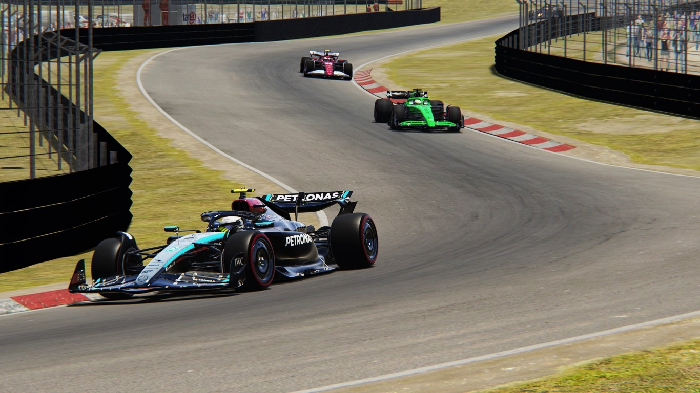

Javad Storms From P10 to Victory in Chaotic Zandvoort Thriller
Zandvoort, Netherland - Round 12 of the 2027 Formula One World Championship
Zandvoort delivered another wild chapter in the 2027 season — and once again, Javad emerged
victorious in spectacular fashion. Starting all the way down in P10, the championship leader
produced one of the greatest opening laps of the year, slicing through the chaos to take the lead before
the first tour was complete.
The race exploded into drama immediately. Pole-sitter Lewis Hamilton lost control through Turn 3,
sliding into the gravel and retiring on Lap 1. Moments later, the home crowd gasped as Max
Verstappen spun at high speed and also retired on the spot — a double disaster for Red Bull-powered
machinery.
But while the front row collapsed, Javad seized the moment. With fearless precision, he overtook half
the grid in a single lap, pulling off a breathtaking move on Leclerc around the banked corner to secure
the lead early. From there, the Ferrari driver never looked back, managing the pace and finishing with a
commanding gap.
Behind him, Charles Leclerc delivered another flawless drive, climbing from P8 to claim P2 and
once again proving his resurgence in recent rounds.
The star of the midfield was undoubtedly Gabriel Bortoleto, who qualified a sensational P3 and
converted it into a podium. Under relentless pressure from Oscar Piastri in the closing laps, the Sauber
rookie defended brilliantly, taking an incredible P3 — one of his strongest results of the season.
Norris, fighting with Russell and Tsunoda for P4, tragically locked up with just two laps remaining,
smashing into the barrier and adding another DNF to McLaren's difficult weekend.
McLaren salvaged points thanks to Piastri, who brought home P4, while Hülkenberg,
Tsunoda, and Russell filled out the top seven in a race defined by attrition.
By surviving the chaos — and mastering it — Javad extends his commanding championship lead once again.
🏁 Official Race Classification — Zandvoort:
1. Javad (Ferrari) — 13:03.868
2. Charles Leclerc (Ferrari) — +07.026
3. Gabriel Bortoleto (Sauber) — +08.656
4. Oscar Piastri (McLaren) — +12.818
5. Nico Hülkenberg (Sauber) — +31.230
6. Yuki Tsunoda (RedBull) — +1:07.114
7. George Russell (Merecedes) — +1:19.417
8. Lewis Hamilton (Merecedes) — DNF
9. Max Verstappen (RedBull) — DNF
10. Lando Norris (McLaren) — DNF